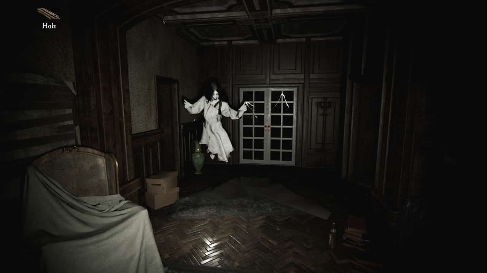
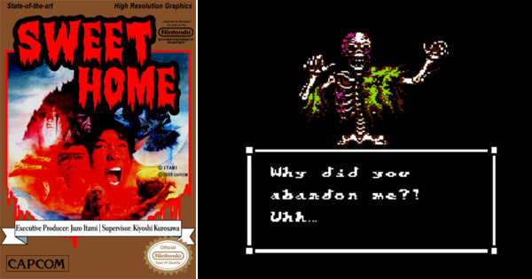

|
Horror games are a genre of video games designed to create feelings of fear, panic, and anxiety in the player. They are characterized by their dark atmospheric settings and suspenseful themes. They may feature scenes called jump scares, in which there is a loud noise or something jumps out at the player to scare them. Horror games usually have elements of horror fiction, such as zombies, vampires, and ghosts. They may also include survival elements, in which the player is required to survive against overwhelming odds. |
|
Horror games have also become a popular target for reaction videos, with YouTubers and Twitch streamers sharing their terror-filled experiences with their viewers. This has led to a new wave of popularity for the genre, as people are sometimes more interested in watching others play than playing themselves. |
 |
|  |
Perhaps the earliest “scary” game of note is Sega's Killer Shark. Originally released in 1972, the game had players attempting to destroy a massive shark by firing a light gun at it. Although the gameplay was crude and rudimentary, Killer Shark remains a favorite among retro connoisseurs to this day, thanks to its great cabinet graphics and the fact that it was featured onscreen briefly in Jaws. |
|
The first Survival Horror video game was the 1982 game Haunted House, released for the Atari 2600, which incorporated many traditionally accepted elements of the genre like puzzle-solving and evasion. Throughout the 80s, a series of games was released that fell under the banner of Survival Horror. However, the genre 'Survival Horror' was not defined until the 90s, so all of these games were included in the genre retroactively. At the time, they were likely considered to be Action games, of which Survival Horror came to be a sub-genre. Notable examples from this decade include the Monster Bash arcade game, Castlevania (1986), War of the Dead (1987), and Splatterhouse (1988). |
|
The early 1990s saw a continued release of many games that would today be considered traditional Survival Horror games. Alone in the Dark (1992), Doctor Hauzer (1994), and the Clock Tower series (first installment released in 1995), among others, further propagated Survival Horror themes while increasing the genre's popularity. The release of Resident Evil (1996) by Capcom marked the beginning of the "Golden Age" of Survival Horror. The huge success of the game, both critically and commercially, ensured its ascent as a definitive game that first truly "Survival Horror" game. It served as a formula for many subsequent games, and its definition of the genre drew many previous games into the genre retroactively. The continued release of horror games for the rest of the 90s was spurred by the huge success of Resident Evil, and most of these games mimicked the classic hit as much as possible. Examples include Overblood (1996), The Note (1997), Hellnight (1998), and Resident Evil 2, which was also highly critically acclaimed. In many scholars' opinions, it was not until the release of Konami's Silent Hill (1999) that the Golden Age of Survival Horror reached its climax. The game is considered by many to be the scariest game of all time; it draws heavily from aspects of Japanese psychological horror, while maintaining many traditionally Western elements of horror. |